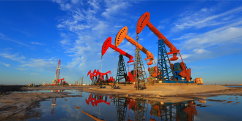

Pharmaceutical industry in Pakistan
The pharmaceutical industry in Pakistan has grown during the past recent decades. At the time of the independence of Pakistan in
1947, there were few production units in the country. Currently Pakistan has more than 800 large volume pharmaceutical
formulation units, including those operated by 25 multinationals present in the country. Almost all the raw materials
used in making of medicine are sourced from abroad. About 50 percent of them are imported from India.
The Pakistan Pharmaceutical Industry meets around 90% of the country's demand of finished dosage forms and 4% of Active
ingredients. Specialized finished dosage forms such as soft gelatin capsules, parenteral fat emulsions and Metered-dose inhalers
continue to be imported. There are only a few bulk drug Active ingredient producers and Pakistan mainly depends on imports of
bulk drugs for its formulation needs resulting in frequent drug shortages. Political disturbances and allegations of under-invoicing
add to the uncertainty of imports and clashes with the customs and tax authorities are common.
The National pharma industry has shown growth over the years, particularly over the last decade. The industry is trying to upgrade
itself and today the majority industry is following local Good Manufacturing Practices (GMP) laws, with a few in accordance with
international guidance. Currently the industry has the capacity to manufacture a variety of traditional products ranging from simple
pills to capsules, ointments and syrups.
Electric vehicle industry in Pakistan
 Pakistan already has a significant market for hybrid vehicles with Honda's Vezel, Toyota's Prius and Aqua,
Pakistan already has a significant market for hybrid vehicles with Honda's Vezel, Toyota's Prius and Aqua,
and other models seen on the roads. The Automotive Development Policy (2016–2021) and the launch of China-Pakistan
Economic Corridor (CPEC) are encouraging foreign investments for the new automobile brands to enter Pakistani market,
while the leading manufacturers in the automobile industry in Pakistan are interested in introducing EV models with a wide
range of prices which target consumers of diverse income groups. Several members of the international automobile industry
including South Korea, China, and Japan also believe that Pakistan has a high potential market for EV technology, and local
businesses are collaborating with them to bring EVs in Pakistan.
Petroleum industry in Pakistan

According to the United States Energy Information Administration (EIA), Pakistan may have over 9 billion barrels
(1.4×109 cubic metres) of petroleum oil and 105 trillion cubic feet (3.0 trillion cubic metres) in natural gas
(including shale gas) reserves.
As per BP' Statistical Review of World Energy 2016, at the end of 2015 Pakistan had the following proved reserves of
fuels: 0.5 Trillion cu m of natural gas and 2.07 Billion tons of coal (sub-bituminous and lignite).
Pakistan's first gas field was found in the late 1952 in Balochistan near a giant Sui gas field. The Toot oil field was not
discovered until the early 1960s in the Punjab. The Most Rich resource in Khaur Company (Attock). It covers 122.67 square
kilometres (47.36 sq mi). Pakistan Petroleum and Pakistan Oilfields explored and began drilling these field with Soviet help
in 1961 and activity began in Toot during 1964.